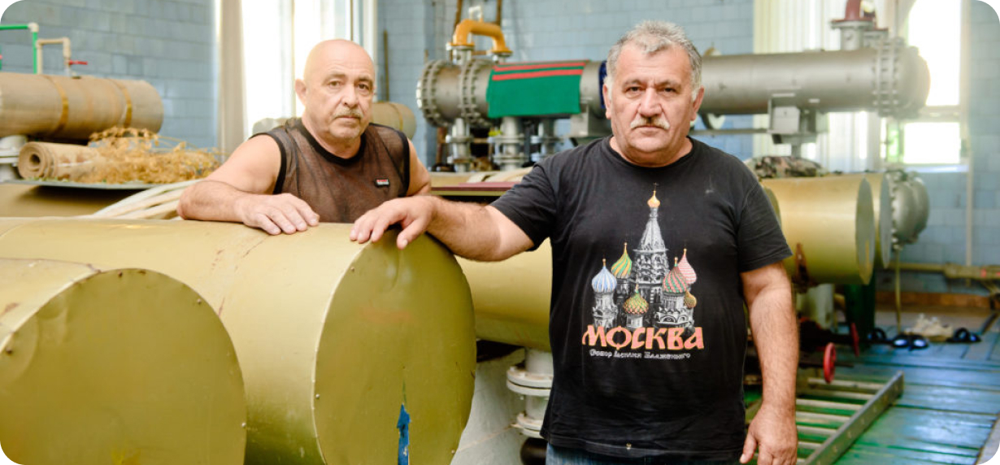

<%= _.template(require('./html-includes/header.html').default)() %>
<%= _.template(require('./html-includes/breadcrumps.html').default)() %>
Наша команда
Руководство
Медицинская служба
Управление
Сочиминвод
Управление
эксплуатации
Благоустройство
Профсоюз
«Ежедневно команда управления эксплуатации трудится на благо обеспечения жизнедеятельности
крупнейшего бальнеологического курорта России, ежедневного принимающего до 1000 человек
на оздоровительные процедуры».

<%= _.template(require('./html-includes/team-footer.html').default)() %>
<%= _.template(require('./html-includes/footer.html').default)() %>